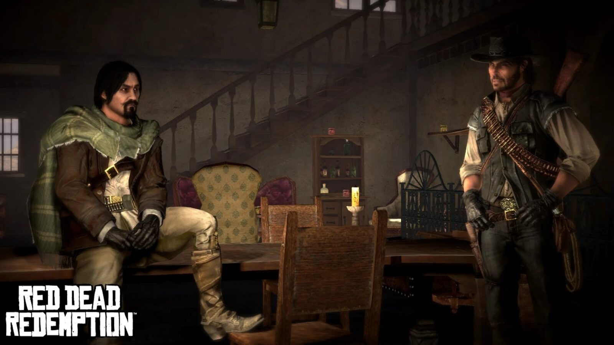
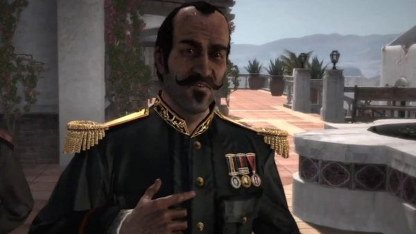
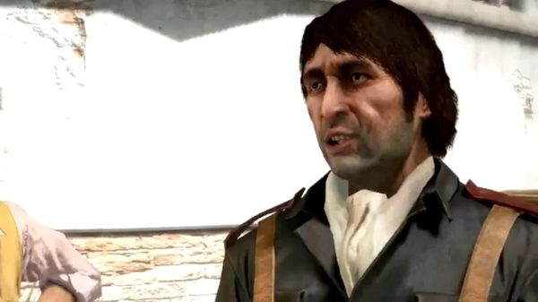
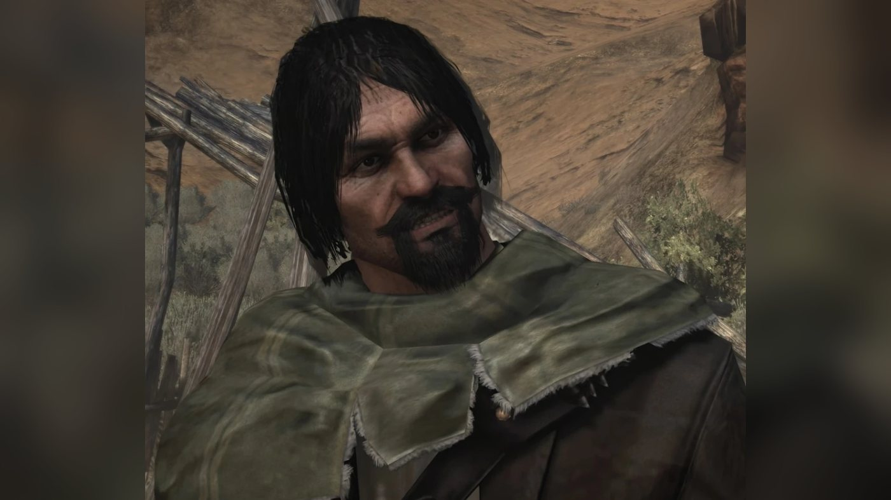
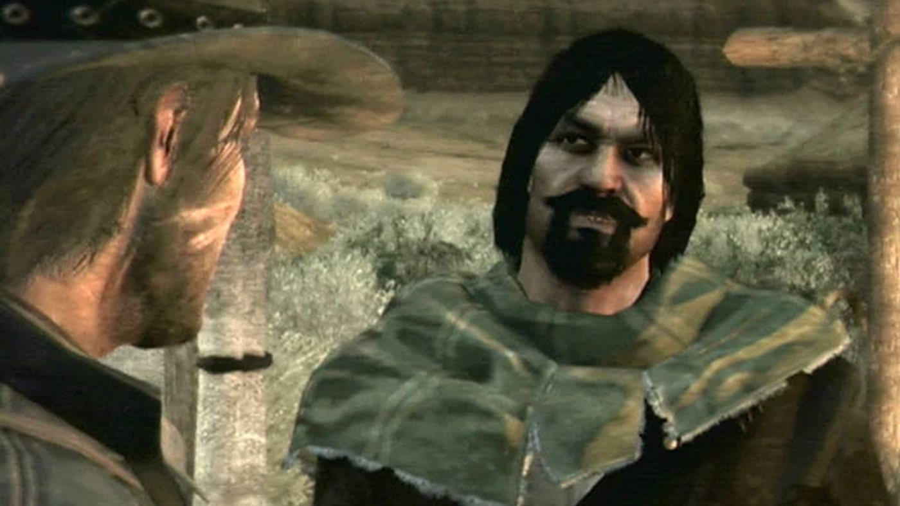
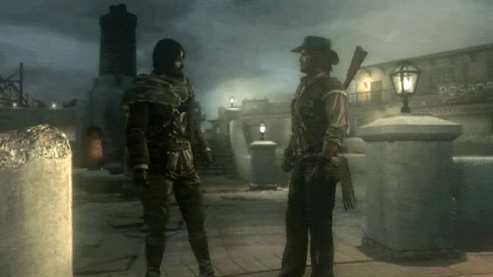
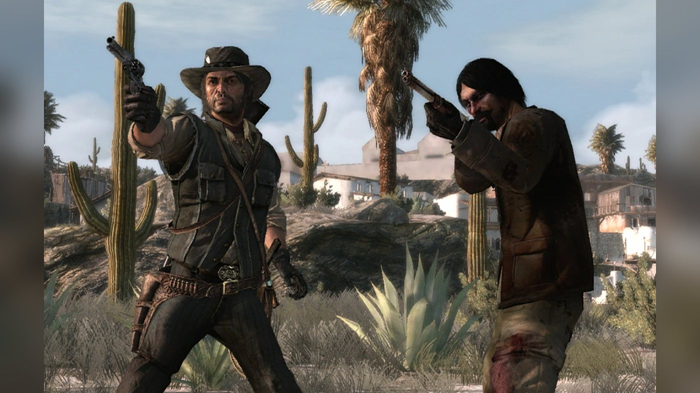
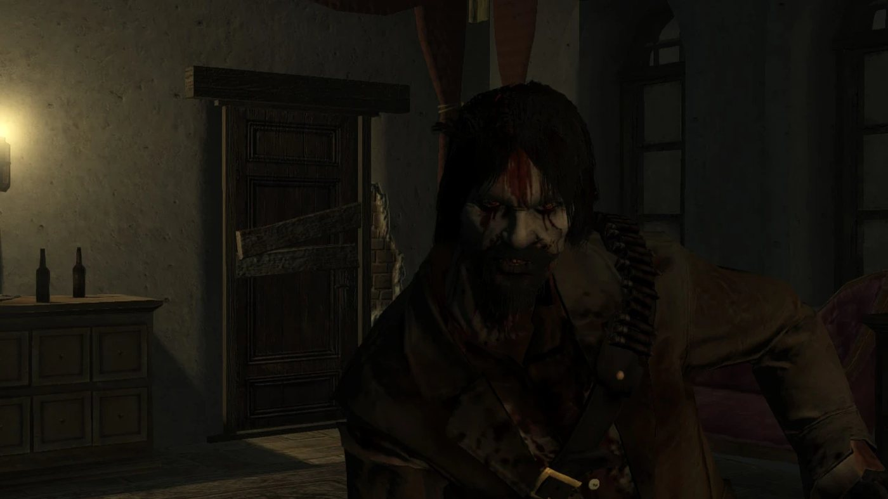

Personnage · Nuevo Paraíso
Abraham Reyes
Abraham Reyes est le chef des rebelles du Nuevo Paraíso, au Mexique, dans Red Dead Redemption (2010), dont l'action se déroule en 1911. Fils d'aristocrate, il mène la révolte contre le gouverneur de la province, le colonel Agustin Allende, et contre le gouvernement du président Ignacio Sanchez. John Marston le tire des mains d'un peloton d'exécution à El Presidio après que Luisa Fortuna lui a appris sa capture, et les rebelles de Reyes sauvent à leur tour John de son exécution à Chuparosa. En échange de l'aide de John, les espions de Reyes retrouvent Javier Escuella, et les rebelles prennent El Presidio, puis Escalera ; Allende et Bill Williamson, en fuite dans une diligence, meurent sur la route, abattus par John ou par Reyes.
En 1914, le dernier journal du jeu, le Blackwater Ledger & Sentinel, rapporte que le président Reyes nie être un tyran, après que des soldats ont abattu des milliers de manifestants pacifiques au sud de Mexico. Il a la voix de Josh Segarra. On le retrouve aussi dans Undead Nightmare, une extension hors canon : devenu mort-vivant, il est à l'origine de l'épidémie, et John l'abat dans l'avant-dernière mission.
- Nom
- Abraham Reyes
- Naissance
- Date non précisée dans les jeux ; le guide de l'édition Game of the Year, cité par le Red Dead Wiki, lui donne 30 ans (né vers 1881, selon le wiki). Lieu : un ranch aux abords de la capitale (Blackwater Ledger)
- Statut
- Vivant en 1914, président du Mexique (Blackwater Ledger & Sentinel) ; abattu en mort-vivant dans Undead Nightmare (hors canon)
- Nationalité
- Mexicaine
- Activité
- Chef des rebelles de Reyes au Nuevo Paraíso (1911) ; président du Mexique à partir de 1911 (Blackwater Ledger n° 60), toujours en fonctions en 1914 (Blackwater Ledger & Sentinel)
- Base
- Son ranch d'Agave Viejo, Perdido, Nuevo Paraíso
- Famille
- Un père aristocrate (Blackwater Ledger) ; sa mère, décédée
- Alliés
- John Marston, Luisa Fortuna
- Ennemis
- Agustin Allende, Vincente de Santa, le président Ignacio Sanchez
- Armes
- Winchester Repeater, Schofield Revolver, Rolling Block Rifle, couteau de chasse (Red Dead Wiki)
- Cheval
- Cleveland Bay (Red Dead Wiki)
- Jeux
- Red Dead Redemption, Undead Nightmare ; modèle multijoueur (Liars and Cheats)
- Voix
- Josh Segarra
Biographie
Origines
Red Dead Redemption ne donne aucune date de naissance pour Abraham Reyes. Son passé est connu par un article du Blackwater Ledger, "Another Civil War in Mexico?", paru dans le numéro 56. On y lit qu'il est le fils d'un noble, "born in a ranch just outside the capital", c'est-à-dire né dans un ranch aux portes de Mexico. Il a fait ses études au Mexique puis en Europe. Le journal ajoute qu'il a été renvoyé d'un pensionnat suisse "after an incident with a chamber maid", à la suite d'une histoire avec une femme de chambre. Ses parents ne sont jamais nommés. Sa mère n'est plus en vie en 1911 : Reyes affirme qu'elle se retournerait dans sa tombe s'il épousait une paysanne. D'après Luisa Fortuna, sa famille ne voit pas d'un bon œil leur union.
Reyes lui-même en dit un peu plus à John Marston sur sa jeunesse. Sur la route d'El Presidio, il raconte qu'à l'époque où Javier Escuella se taillait une réputation dans la province, lui voyageait encore en Europe et vivait à Madrid avec la femme de l'ambassadeur ; c'était, dit-il, avant que ses envies de rébellion ne prennent le dessus. D'après le Red Dead Wiki, il raconte aussi dans "The Great Mexican Train Robbery" que sa nourrice lui répétait qu'un jour tout le monde le connaîtrait ; la réplique ne figure pas dans la transcription de la mission publiée par le wiki.
Les journaux de 1911 posent le décor politique. Le Mexique est gouverné par le général Ignacio Sanchez, qui, selon le numéro 53, "seized power last year in a bloody coup in which he killed his own brother" : il a pris le pouvoir l'année précédente par un coup d'État sanglant, au cours duquel il a tué son propre frère. Le numéro 55 fait état d'émeutes, de trains attaqués par des bandes rebelles et d'escadrons de la mort gouvernementaux, ce que le pouvoir minimise. Le numéro 56 désigne ensuite Reyes comme le chef d'une bande de rebelles qui a "seriously challenged government rule" au Nuevo Paraíso et dans les régions voisines. Il promet de faire entrer le Mexique dans le XXe siècle et d'améliorer le sort des pauvres. Le même article lui prête l'ambition de donner au pays un rôle de premier plan sur la scène mondiale, grâce à une alliance avec les empires des Habsbourg et ottoman. L'article se termine sur ce jugement : c'est cette "foresight and intelligence", cette clairvoyance et cette intelligence, qui lui vaut l'adhésion d'une grande partie du Mexique et qui mène le pays au bord d'une anarchie sanglante.
Red Dead Redemption (1911)
En 1911, des agents du Bureau of Investigation retiennent la femme et le fils de John Marston pour l'obliger à traquer ses anciens compagnons Bill Williamson et Javier Escuella. La piste conduit John au Nuevo Paraíso, une province mexicaine que le colonel Agustin Allende gouverne depuis Escalera au nom de Sanchez. Dans le jeu, les rebelles de Reyes ont leur base à Agave Viejo, un ranch de la région de Perdido. John travaille pour les deux camps à la fois : pour Allende et le capitaine Vincente de Santa d'un côté, pour Luisa Fortuna et les rebelles de l'autre. Les officiers du gouvernement lui parlent de Reyes avant qu'il ne le rencontre (voir Missions). Reyes apparaît à l'écran dans cinq missions du deuxième acte, toutes en 1911, dont trois qu'il confie lui-même.
Acte II : Nuevo Paraíso
Dans "Must a Savior Die?", John trouve Luisa en larmes devant la maison incendiée de sa famille. Reyes venait la retrouver à Roca de Madera quand une patrouille de l'armée lui a tendu une embuscade. Il est désormais détenu à El Presidio, un fort de l'armée situé au nord, et doit être exécuté. Luisa y conduit John en diligence. John franchit un pan de mur effondré et gagne un poste de tireur d'élite. Dans la cour, le bourreau annonce à Reyes qu'il va payer sa trahison et son projet de renverser Allende, puis ordonne au peloton de se mettre en place et de viser. John l'abat au fusil Rolling Block, élimine les soldats et coupe les liens de Reyes. Reyes réclame un cheval et monte en croupe derrière John. Un guide rebelle les conduit jusqu'à Luisa, qui les attend avec des amis sur un embarcadère du San Luis.
Quand John lui dit que Luisa l'envoie, Reyes ne réagit pas d'abord à ce nom, puis la présente comme l'amour de sa vie. En apprenant le nom de John, il avoue l'avoir pris pour l'Américain qui travaille pour Allende et avoir songé à lui tirer dans le dos. Il appelle ensuite Luisa "Laura", et John le reprend. Reyes promet une récompense : de l'argent, des femmes, ou Luisa si John la veut. John répond qu'il n'est là que pour deux hommes. Reyes fête son évasion comme s'il avait battu cent soldats, ce qui, fait remarquer John, est surtout son œuvre à lui. Au bord du fleuve, Reyes salue Luisa et dit à John qu'il est comme un frère et que son peuple a besoin d'un homme comme lui. Il l'invite à son ranch d'Agave Viejo et promet de l'aider à retrouver ses deux hommes, à condition que John aide en retour le peuple à conquérir sa liberté. Il s'en va avec Luisa en lui chantant une chanson et en l'appelant encore Laura.
Dans "Cowards Die Many Times", Allende annonce à John que Bill et Javier ont été capturés à Chuparosa, et De Santa l'y emmène. Dans l'église, un soldat assomme John. Il reprend connaissance quand on lui plonge la tête dans un abreuvoir, et les hommes de De Santa s'apprêtent à l'exécuter. C'est le moment que choisissent Reyes et ses rebelles pour attaquer la ville, et Reyes abat le bourreau qui allait tirer sur John. Il l'appelle, tranche ses liens et lui fait remarquer qu'il a de la chance qu'il soit arrivé à temps ; John répond qu'ils sont quittes. Reyes l'envoie récupérer ses armes. Les rebelles affrontent les soldats dans les rues, et John tue le capitaine Espinoza dans la mairie. Bill et Javier n'ont jamais été à Chuparosa.
Après la bataille, Reyes rassemble ses rebelles dans la ville et prononce un discours. Il leur dit que la journée a prouvé que les jours du régime sont comptés, et leur promet une république libre, gouvernée avec justice par des hommes de valeur. Il les prévient que le travail n'est pas terminé et qu'ils se battront jour et nuit, jusqu'à ce que les tyrans locaux comme Allende aient disparu et que leurs partisans soient passés au fil de l'épée. Il conclut en criant vive la révolution et vive le Mexique, des cris que la foule reprend.
"The Great Mexican Train Robbery" commence à Agave Viejo. Reyes accueille John comme le bandit américain devenu chasseur de primes qui s'apprête à gagner la révolution mexicaine. Il grimpe sur une souche pour haranguer ses hommes, puis confie à John que leur énergie le nourrit, et qu'eux et lui étaient faits pour se trouver. Il promet d'être un dirigeant juste et sage, puisqu'il connaît le peuple et la terre. Quand John lui répond par l'ironie, Reyes juge le sarcasme indigne d'un homme comme John et propose un braquage pour la bonne cause. En chemin, il demande à John s'il est vraiment venu au Mexique pour assassiner ses deux meilleurs amis. Pressé par John, il reconnaît qu'il ne sait pas exactement où se trouvent Bill et Javier, seulement qu'ils sont au Mexique, et que ses meilleurs hommes sont sur leur piste.
Reyes demande à John comment il a connu les deux hommes. John lui parle du gang de Dutch van der Linde, qui volait les riches, jugeait le système pourri et pensait que le changement ne pouvait passer que par la brutalité. Reyes demande si Dutch était un révolutionnaire comme lui, dit qu'il aime ce qu'il entend de cet autre idéaliste violent et demande où il se trouve ; John répond que Dutch a perdu la raison. Reyes estime que l'histoire de John ferait un bon corrido, une ballade mexicaine à la gloire des héros, et affirme qu'on en a écrit plus d'une centaine sur lui. Il ajoute qu'à Mexico, on parle déjà de son évasion d'El Presidio. Il décrit ensuite Allende comme un lâche qui prend plaisir à battre son peuple, et comme la marionnette de Sanchez, un dictateur qui parle de réformes pendant que le peuple s'appauvrit.
La cible est un train de l'armée chargé de ravitaillement, sur le point de quitter la gare de Chuparosa. Reyes expose son plan : ses hommes vont faire diversion à grand bruit pendant que John monte à bord et détache les wagons de l'armée. Il lui remet un couteau pour éliminer les gardes sans bruit. John nettoie le train, prend la locomotive et la conduit jusqu'à Reyes, qui le félicite et lui dit de faire sauter la trappe du wagon blindé. John force le coffre qui s'y trouve et en garde le contenu. Reyes repart ensuite livrer la marchandise, en assurant à John que ses espions auront bientôt les renseignements qu'il attend. Entre-temps, Luisa transmet à John une demande de Reyes dans "Father Abraham", et les rebelles aident John à faire tomber le capitaine de Santa dans "Captain De Santa's Downfall".
Au début de "The Gates of El Presidio", John surprend Reyes en plein ébat avec une femme à Agave Viejo. Quand John lui demande ce qu'en dirait Luisa, Reyes commence par demander de qui il parle. Il conseille ensuite à John de tenter sa chance avec elle, et s'amuse de ce qu'elle se croie sa femme. Il n'épousera jamais une paysanne, explique-t-il : il sera le prochain président du Mexique, et sa femme fréquentera des ambassadeurs et des rois. Il annonce alors un cadeau à John : ensemble, ils vont livrer à la justice l'homme qu'il recherche.
Sur le chariot, Reyes a appris le combat de Sepulcro et la mort de De Santa. Si John a tué De Santa lui-même, Reyes se dit heureux que ce soit sa balle, après ce qui s'est passé à Chuparosa. Si John l'a laissé aux rebelles, Reyes lui demande pourquoi il ne s'en est pas chargé. Reyes révèle ensuite que Javier se trouve à El Presidio, là où ils se sont rencontrés, mais qu'il ne sait rien de Williamson. On lui a rapporté que les deux hommes ont payé Allende pour qu'il les cache, et qu'ils sont sous sa protection depuis l'arrivée de John au Mexique. Prendre El Presidio, dit-il, ouvrira la route d'Escalera. Quand John décrit Javier comme un cynique qui aurait voulu être un romantique, Reyes lui répond qu'il est tout le contraire.
La route continue. Interrogé sur la femme de tout à l'heure, Reyes la présente comme une autre fidèle partisane du Mexique libre, sans donner son nom ; John lui fait remarquer qu'il ne se souvient même pas du nom de la jeune femme qu'il doit épouser. Il explique à John qu'un homme comme lui ne peut pas appartenir à une seule femme, et qu'il doit au Mexique de faire des enfants pour répandre un sang noble parmi les paysans. Il énumère les insultes dont les Américains affublent les Mexicains, et traite John de bon socialiste quand celui-ci dit juger un homme sur la manière dont il est traité. Interrogé sur les ouvriers chinois de la région, Reyes les qualifie de race inférieure. Il rêve tout haut de prendre d'assaut la demeure d'Allende à Escalera et de dormir dans ses draps de soie. Quand John lui demande ce qu'il fera du pouvoir une fois le Mexique à lui, il répond qu'il prononcera le plus grand discours de sa vie, marchera sur la capitale contre Sanchez, et déléguera. Il suggère à John de revenir un jour au Mexique, comme Landon Ricketts, pour entrer à son état-major.
Près du fort, Reyes explique que ses hommes vont lancer une fausse attaque sur une entrée latérale, pendant que John lancera sur la porte principale le chariot chargé de cinq caisses de TNT, en sautant avant l'impact. Il allume la mèche sur-le-champ. La porte vole en éclats, les rebelles s'engouffrent dans le fort, et Reyes envoie John chercher Escuella. John rattrape Javier après une poursuite ; selon le choix du joueur, il le capture ou le tue. Reyes rappelle alors John : l'armée envoie des renforts. John les repousse au canon, et Reyes proclame qu'El Presidio est aux rebelles. Quand John revient chercher Javier, vivant ou mort, Reyes commente les retrouvailles de deux vieux amis (voir Citations). John remet ensuite Javier à Edgar Ross et Archer Fordham près du pont de la frontière ; Reyes n'est pas présent.
"An Appointed Time" est la dernière mission du deuxième acte. L'armée a exécuté des rebelles à Escalera et capturé Reyes. John traverse la ville pendant que les rebelles affrontent les soldats, et trouve Reyes roué de coups sur la place par le major Raul Zubieta et ses hommes, avant son exécution. Reyes accueille John d'un bienvenue au Mexique moqueur. John ordonne aux soldats de le relâcher et dégaine. Reyes pousse Zubieta à tirer en faisant passer John pour un ivrogne. Luisa se rue alors sur les soldats, un couteau à la main, en criant de libérer son homme, et les soldats qui gardent Reyes l'abattent. John en tue deux. Il propose à Zubieta de régler l'affaire sur-le-champ ; le major accepte, à condition de se battre en hommes et non en chiens. John le tue en duel, puis libère Reyes.
Reyes proclame que le peuple est prêt et qu'ils renverseront le colonel le jour même. Un rebelle lui signale que des prisonniers de la prison d'Allende se battront à leurs côtés, et Reyes envoie John libérer ses hommes. Les rebelles donnent ensuite l'assaut à la colline. Reyes confie la mitrailleuse à John pendant qu'ils font sauter la porte avec des barils de poudre, puis le charge de tenir la porte face aux soldats qui montent la pente. Au moment où les rebelles enfoncent la porte de la demeure, Allende et Bill Williamson s'enfuient dans une diligence blindée. Reyes et John se lancent à leur poursuite.
Une fois la diligence arrêtée, Allende pousse Bill dehors et le livre à John en échange de sa propre vie. C'est au joueur de décider : John peut abattre Allende, Bill ou les deux. Reyes tue celui que John épargne, et les deux si John ne tire sur aucun. Dans la version donnée par la transcription du wiki, Reyes abat Allende après une dernière provocation du colonel, et Bill tombe sous les balles de Reyes ou de John au moment où il saisit l'arme d'Allende. Reyes proclame alors qu'Allende est mort et que le Mexique est à lui, et remercie John. John lui rappelle ceux qui sont morts pour cette victoire, dont Luisa. Reyes ne se souvient plus de qui il s'agit, promet qu'un jour portera son nom et l'appelle la journée de Laura. Repris par John, il explique qu'il a aussi connu une Laura.
Reyes invite John à marcher avec les rebelles sur la capitale. John refuse : Williamson mort, ceux qui retiennent sa famille l'attendent à Blackwater. Reyes affirme qu'il va le regretter. John doute que Reyes se souvienne seulement de lui, lui souhaite bonne chance pour la révolution et lui conseille, s'il prend le pouvoir, de se rappeler pourquoi il le voulait. Les deux hommes se séparent là, et Reyes ne reparaît plus dans l'histoire. La fin de la mission ouvre la région de West Elizabeth.
Acte III : West Elizabeth
Pendant que John traque Dutch en West Elizabeth, le Blackwater Ledger relate la suite de l'ascension de Reyes. Le numéro 58 annonce qu'Allende, gouverneur du Nuevo Paraíso, "was killed yesterday, following a fire fight with rebels", tué la veille au cours d'une fusillade avec les rebelles. Il ajoute que, selon des rumeurs non confirmées, des mercenaires américains auraient combattu dans les deux camps. Reyes y voit une grande victoire qui le mènera jusqu'au palais présidentiel de Mexico. Il promet d'apporter davantage de liberté politique au Nuevo Paraíso et de créer sans attendre un conseil ouvrier. Il dote aussi la province d'un nouvel hymne, "a ballad of his own composition", une ballade de sa composition.
Deux numéros plus loin, dans le numéro 60, l'article "Sanchez's Government Falls" annonce que Reyes a pris le pouvoir. Après des semaines de combats autour de la capitale, des émeutes de la faim et des batailles dans de nombreuses provinces, la Cinquième division de cavalerie mexicaine a changé de camp, Reyes lui ayant promis une solde plus élevée et des permissions doublées. Ses partisans ont mis à sac le palais présidentiel. Sanchez aurait pris la fuite pour se cacher, mais des informations contradictoires laissent penser qu'il a pu être tué. Reyes déclare au journal : "Finally, my people, the people of this proud and valiant land are free. A new golden age for our country is just beginning." Il promet une période de stabilité, puis des élections, et décrète trois jours de fiesta et un jour férié national. Les émeutes se poursuivent dans une grande partie du pays, et les premières estimations font état de 100 000 morts au plus dans le conflit.
Le journal de 1914
Reyes est toujours président en 1914. Le numéro 213 du Blackwater Ledger & Sentinel, que l'on peut lire avec Jack Marston après la dernière mission de John, publie l'article "President Reyes Denies He is a Tyrant, Despite Massacre". Il s'ouvre sur le massacre sanglant du mois précédent, dans une petite ville au sud de Mexico, où "thousands were shot by troops while peacefully protesting the government" : des milliers de manifestants pacifiques ont été abattus par la troupe. L'article ne dit pas qui a donné l'ordre. Reyes y dément les rumeurs selon lesquelles il serait un tyran revenu sur sa promesse de ramener la paix au Mexique. Il reconnaît que la marche vers la démocratie est plus lente qu'il ne l'aurait souhaité, mais assure que le pays progresse. Il présente le nouveau palais présidentiel comme la preuve que les Mexicains savent travailler ensemble, et affirme que les projets d'une salle de concert et d'autres bâtiments publics sont maintenus. Il dément aussi les informations faisant état d'une famine généralisée, et assure que le Mexique s'apprête à entrer dans un nouvel âge d'or.
Undead Nightmare (hors canon)
Undead Nightmare, une extension sortie en 2010, ne fait pas partie du canon de la série. Reyes y est à l'origine de l'épidémie. Dans "Mother Superior Blues", la mère supérieure de Las Hermanas raconte à John qu'une femme a relié l'épidémie à un acte de Reyes, et l'envoie à Escalera, où il doit retrouver Reyes dans la demeure présidentielle. Dans "A Civilized Man", avant-dernière mission de l'extension, John entre dans la demeure et trouve un Reyes mort-vivant en train de poursuivre une jeune femme autour de la table de la salle à manger. John lui crie d'arrêter, et Reyes se jette sur lui. Il se bat comme un Bruiser, l'un de ces morts-vivants massifs qui chargent le joueur, et John l'abat d'une balle dans la tête.
La jeune femme explique alors que Reyes a pris un masque dans les catacombes situées sous la ville, et que le remettre en place mettra fin à l'épidémie. D'après la page du wiki consacrée à Undead Nightmare, elle attribue ce vol d'un ancien masque aztèque à sa soif d'invulnérabilité. D'après la page du Red Dead Wiki consacrée à Reyes, il l'a porté en croyant qu'il le rendrait immortel, et s'est au contraire changé en mort-vivant. John emporte le masque à travers les catacombes, dont l'entrée se trouve dans les gradins des arènes, derrière la demeure, et le replace sur son autel. La jeune femme révèle qu'elle est Ayauhtéotl, une déesse aztèque, et disparaît. De retour à Beecher's Hope, John retrouve Abigail et Jack guéris. Trois mois plus tard, dans la scène finale, "On a Pale Horse", Seth Briars dérobe le masque dans les catacombes, et les morts se relèvent.
Personnalité
Le Red Dead Wiki cite le guide de l'édition Game of the Year de Red Dead Redemption : "He is the 30-year-old son of a wealthy nobleman, who has seemingly sided with the peasants and the rebels to drive out the regime that supports Allende and de Santa. He is very vain and he does not seem to really care about the rights of the poor. However, Mr. Reyes does love to give speeches." (Ce fils de riche aristocrate, âgé de 30 ans, semble s'être rangé du côté des paysans et des rebelles pour chasser le régime qui soutient Allende et De Santa. Très vaniteux, il ne paraît guère se soucier des droits des pauvres. M. Reyes adore en revanche faire des discours.)
Il harangue les rebelles du haut d'une souche ou sur la place d'une ville, et termine ses discours aux cris de "Viva la revolución!" (vive la révolution). Il appelle John mon frère, amigo ou compadre. Il grossit ses exploits quand il les raconte (voir Citations). Il parle sans détour des femmes avec qui il couche, et cite rarement leur nom. Il oublie plus d'une fois le prénom de Luisa Fortuna (voir Relations).
Dans ses propres mots
Sur ses projets, dans "The Great Mexican Train Robbery" : "When I rule these people, I will be fair and judicious and wise. How so you ask? Very simple... I know these people! I know this land. In short, I can make them better." (quand je gouvernerai ce peuple, je serai juste, avisé et sage ; comment, me direz-vous ? C'est très simple : je connais ces gens, je connais cette terre ; bref, je peux les rendre meilleurs). Quand John lui demande ce qu'il fera du pouvoir une fois le Mexique à lui, dans "The Gates of El Presidio" : "Like any great leader, my brother, I will delegate." (comme tout grand chef, mon frère, je déléguerai). Sur les ouvriers chinois, dans la même mission : "That is different. They are an inferior race." (c'est différent : c'est une race inférieure). Réponse de John : "You have all the makings of a great leader, Abraham." (vous avez tout d'un grand chef, Abraham).
Sur Luisa, quand John lui demande s'il va l'épouser : "Marry a peasant? My dear boy, don't be absurd. I'm going to be the next president of Mexico. My wife will meet ambassadors, kings, other great men. The very thought that I would marry some peasant girl with the hands of a farmer, well I really don't think so. [...]" (épouser une paysanne ? Mon cher, ne soyez pas ridicule ; je serai le prochain président du Mexique, et ma femme recevra des ambassadeurs, des rois et d'autres grands hommes ; l'idée même d'épouser une petite paysanne aux mains de fermière, très peu pour moi [...]). Sur ses conquêtes, un peu plus loin : "I owe it to the future of Mexico to breed, my brother. If I can get noble blood flowing through the veins of peasants, can you imagine how great this country can be? An army of Reyes! Of Kings!" (je dois à l'avenir du Mexique de me reproduire, mon frère ; si je fais couler du sang noble dans les veines des paysans, imaginez la grandeur de ce pays ! Une armée de Reyes ! De rois !).
Noms
Reyes signifie rois en espagnol, et il joue lui-même sur le mot (voir plus haut). John l'appelle Abraham ou Reyes ; Luisa dit Abraham ou Abraham Reyes. Il se présente à John comme "your brother, Abraham" (ton frère Abraham) au moment de lui révéler la cachette de Javier. Victor, l'un de ses rebelles, s'écrie "Viva Abraham Reyes!" quand John abat lui-même le capitaine De Santa à Sepulcro. Le Blackwater Ledger l'appelle Mr. Reyes en 1911, et le Blackwater Ledger & Sentinel President Reyes en 1914.
Apparence
C'est un homme d'une trentaine d'années aux cheveux noirs et raides tombant sur les épaules, aux yeux sombres, avec une moustache et une courte barbe noire au menton. Il porte d'ordinaire un châle vert effiloché sur les épaules, par-dessus une veste brune. Selon le Red Dead Wiki, sa boucle de ceinture porte les armes des États confédérés d'Amérique.
Relations

John Marston
John le soustrait au peloton d'exécution d'El Presidio, et les rebelles de Reyes lui rendent la pareille à Chuparosa (voir la biographie). Leur alliance repose sur un marché conclu dès leur première chevauchée : Reyes aidera John à retrouver Bill Williamson et Javier Escuella, et John aidera les rebelles à l'emporter (voir la biographie). Dès lors, Reyes l'appelle son frère et l'accueille dans son ranch d'Agave Viejo. John accueille la plupart de ses discours par des sarcasmes (voir Citations). Quand John le menace au sujet de Williamson et d'Escuella, Reyes promet de les lui livrer et réclame du temps. Les deux hommes se quittent après Escalera, John refusant de marcher sur la capitale (voir la biographie). Dans Undead Nightmare, qui n'appartient pas au canon, John abat Reyes devenu mort-vivant.

Luisa Fortuna
Luisa est persuadée qu'il l'épousera après la révolution (voir Citations). Elle envoie John le libérer à El Presidio et transmet ses ordres dans ses propres missions. Reyes l'appelle Laura, se moque de l'idée de l'épouser et la recommande à John. Elle est abattue à Escalera en tentant de le sauver, et il ne se souvient plus ensuite de qui elle était (ces trois scènes sont racontées dans la biographie).

Agustin Allende
Le gouverneur du Nuevo Paraíso et la cible de sa révolte. Reyes le décrit à John comme une marionnette du président Sanchez, un petit chien qui bat le peuple qu'il a juré de protéger et y prend plaisir. Allende, de son côté, explique à John que les hommes comme le père de Javier sont des alliés naturels de Reyes. Allende meurt sur la route à la sortie d'Escalera, abattu par John ou par Reyes (voir la biographie).

Vincente de Santa
Le capitaine de l'armée traque Reyes et l'insulte copieusement devant John (voir Citations). De Santa trahit John à Chuparosa juste avant l'arrivée de Reyes et de ses rebelles. Il meurt à Sepulcro, abattu par John ou par les rebelles, et Reyes commente sa mort dans "The Gates of El Presidio" (voir la biographie).

Javier Escuella
Les espions de Reyes localisent Javier à El Presidio, où, selon Reyes, Bill et lui ont payé Allende pour être protégés. L'assaut des rebelles sur le fort permet à John de l'atteindre (voir la biographie).

Bill Williamson
Reyes ne peut pas dire à John si Bill se trouve à El Presidio avec Javier. Bill fuit Escalera dans la diligence d'Allende et meurt sur la route, abattu par John ou par Reyes (voir la biographie).

Dutch van der Linde
Les deux hommes ne se rencontrent jamais. John parle de son ancien chef à Reyes pendant "The Great Mexican Train Robbery" (voir la biographie).

Landon Ricketts
Les deux hommes ne partagent aucune scène. Ricketts explique à John que Luisa est proche du chef rebelle. Reyes cite Ricketts en exemple quand il suggère à John de revenir un jour au Mexique (voir la biographie).
Ignacio Sanchez
Le président du Mexique, jamais montré dans le jeu. Reyes le qualifie de "kind and generous dictator", le bon et généreux dictateur du pays, et le tient pour responsable de tout ce que fait Allende. Il prévoit de marcher sur la capitale une fois Escalera tombée ; les journaux rapportent la suite (voir la biographie).
His family
Selon le Blackwater Ledger, il est le fils d'un aristocrate et a vu le jour dans un ranch aux abords de la capitale. Sa mère et le regard de sa famille sur Luisa sont évoqués dans la biographie. Le Red Dead Wiki mentionne un père et une mère dont le nom n'est pas donné.
His rebels
Les rebelles de Reyes (Reyes' Rebels), qui portent son nom, ont leur base à Agave Viejo. Victor explique à John que des femmes, et même des enfants, se battent dans leurs rangs. Dans "Father Abraham", Luisa transmet les demandes de Reyes : tendre une embuscade aux renforts d'Allende, détruire le ravitaillement de l'armée et ne laisser personne en vie, car Abraham veut faire passer un message. Les prisonniers que John libère à Escalera se déclarent fidèles à Reyes (voir la biographie).
Raul Zubieta
Le major de l'armée qui tient Reyes prisonnier à Escalera. Reyes est son prisonnier, ligoté et roué de coups, quand John arrive ; John tue Zubieta en duel (voir la biographie).
Espinoza
Le capitaine de l'armée explique à John que Reyes cherche à tout prix à recruter des Américains, avec une propagande omniprésente qui promet des femmes et de l'or. John le tue à Chuparosa (voir la biographie).
Herbert Moon
Le commerçant d'Armadillo se moque de lui en exploration libre (voir Citations). Dans une autre réplique citée par le Red Dead Wiki, il le met dans le même sac que les autres dirigeants : "Sanchez, Allende, De Santa, Reyes; all the same! They just want Armadillo rail rides." (Sanchez, Allende, De Santa, Reyes : tous pareils ! Ils ne veulent que le train pour Armadillo).
Ayauhtéotl
Undead Nightmare (hors canon) : la femme que Reyes, devenu mort-vivant, poursuit autour de la table de la demeure d'Escalera ; elle apprend à John que Reyes a emporté un masque des catacombes (voir la biographie).
Propagande, armes et cheval
Discours, chansons et affiches
Reyes recrute par la parole. Il prononce un discours après chaque victoire (voir la biographie) et explique que, dans un pays où la plupart des gens ne savent pas lire, la chanson porte mieux que le journal (voir Citations). Son portrait s'affiche dans toute la région : selon le Red Dead Wiki, on en trouve une affiche à Casa Madrugada, dans la ruelle qui mène au stand de tir, trois à Escalera, une à Tesoro Azul, une à Solomon's Folly, une à Benedict Point et une sur le mur du bureau d'essai de Tumbleweed. John lui dit les avoir vues.
Côté jeu
Reyes confie trois missions principales dans le deuxième acte de Red Dead Redemption, dont deux commencent à sa base d'Agave Viejo, et apparaît dans deux autres ; le tableau des missions les recense. Chacune échoue si John l'agresse ou le tue et, dans "The Great Mexican Train Robbery" et "An Appointed Time", si John abat son cheval. D'après les pages des missions, il ne combat pas dans "Must a Savior Die?" ni dans "The Great Mexican Train Robbery" : dans la seconde, il détourne l'attention des gardes pendant que John monte dans le train, après lui avoir remis un couteau. Dans "An Appointed Time", la page de la mission signale qu'il continue de tirer sur la diligence si John ligote les conducteurs au lieu de les tuer, et qu'il abat Bill et Allende à la fois si John prend Bill au lasso, ce qui peut bloquer la mission.
Une fois "An Appointed Time" terminée, ses rebelles remplacent l'armée comme force de l'ordre dans le Nuevo Paraíso, selon le Red Dead Wiki, et la dernière pièce de la tenue Reyes' Rebels Outfit est mise en vente à Escalera. Sa description en jeu indique : "Disguise yourself as one of Reyes' Rebels and you will be treated kindly by the law in Mexico." (déguisez-vous en rebelle de Reyes et la loi vous traitera avec égards au Mexique).
Armes et cheval
Le Red Dead Wiki lui attribue un couteau de chasse (Hunting Knife), un Schofield Revolver, une Winchester Repeater et un Rolling Block Rifle, ainsi que le Semi-auto Shotgun d'Undead Nightmare. Selon le wiki, la Winchester Repeater est son arme principale : il s'en sert à El Presidio et à Escalera et, selon les choix du joueur, pour abattre Bill Williamson ou le colonel Allende. Le wiki lui donne pour monture un Cleveland Bay.
Missions
Reyes apparaît dans cinq missions principales de Red Dead Redemption, toutes dans le deuxième acte, au Nuevo Paraíso. Il en confie trois lui-même, depuis sa base d'Agave Viejo ou à Escalera. Les deux premières appartiennent aux séries de Luisa Fortuna et de Vincente de Santa. "Cowards Die Many Times" débloque sa propre série, et "An Appointed Time", dernière mission de l'acte, ouvre West Elizabeth et la série d'Edgar Ross. Dans Undead Nightmare, il est la cible de l'avant-dernière mission.
Apparitions
| Mission | Acte | Rôle de Reyes |
|---|---|---|
| Must a Savior Die? | Acte II : Nuevo Paraíso | Prisonnier de l'armée à El Presidio ; John le sauve du peloton d'exécution à la demande de Luisa. 35e mission, confiée par Luisa. Récompenses : 50 points d'honneur et 200 de célébrité ; débloque la mission d'inconnu "Aztec Gold". |
| Cowards Die Many Times | Acte II : Nuevo Paraíso | Mène l'attaque rebelle sur Chuparosa, sauve John de l'exécution et tranche ses liens, puis prononce un discours de victoire. 36e mission, confiée par De Santa. Récompenses : jusqu'à 75 dollars au concours de tir de De Santa, 50 points d'honneur et 250 de célébrité ; débloque la série de Reyes. |
| The Great Mexican Train Robbery | Acte II : Nuevo Paraíso | Donneur de mission. Fait diversion à la gare de Chuparosa et laisse à John le contenu du coffre du train de l'armée. 37e mission. Récompenses : 200 dollars, un Double-action Revolver (ou des munitions de revolver), une lettre de grâce, 125 points d'honneur et 150 de célébrité ; les couteaux de lancer sont mis en vente. |
| The Gates of El Presidio | Acte II : Nuevo Paraíso | Donneur de mission. Allume la mèche du chariot de TNT, mène les rebelles dans El Presidio et envoie John à la poursuite de Javier Escuella. 40e mission. Récompenses : 125 points d'honneur et 300 de célébrité ; succès "Sons of Mexico". |
| An Appointed Time | Acte II : Nuevo Paraíso | Donneur de mission. Libéré par John à Escalera, mène l'assaut contre la villa d'Allende, poursuit la diligence et abat celui des deux, Allende ou Bill, que John épargne. 41e mission, la dernière de l'acte. Récompenses : jusqu'à 535 points d'honneur et 300 de célébrité, accès à West Elizabeth ; succès "No More Fancy Words". |
| A Civilized Man | Undead Nightmare | Avant-dernière mission de l'extension. Le Reyes mort-vivant attaque John dans la demeure d'Escalera et doit être abattu avant que John ne rapporte le masque. |
Missions où il est évoqué
| Mission | Acte | Lien avec Reyes |
|---|---|---|
| The Gunslinger's Tragedy | Acte II : Nuevo Paraíso | Landon Ricketts raconte à John qu'un autre homme du pays promet la liberté aux paysans. Il ne donne aucun nom ; le Red Dead Wiki y voit Reyes. |
| Civilization, at Any Price | Acte II : Nuevo Paraíso | De Santa explique à John que les hors-la-loi qu'il cherche se cachent peut-être chez les rebelles réunis derrière Reyes, l'insulte longuement (voir Citations), puis emmène John escorter, au départ de Chuparosa, un train leurre censé attirer les rebelles dans un piège. 26e mission. |
| The Demon Drink | Acte II : Nuevo Paraíso | De Santa présente John à Allende comme l'homme qui les a aidés à battre Reyes. |
| Mexican Caesar | Acte II : Nuevo Paraíso | Allende affirme avoir entendu dire que Bill et Javier chevauchent avec Reyes. Le capitaine Espinoza accuse Reyes d'attirer les Américains à coups de promesses (voir Citations). |
| My Sister's Keeper | Acte II : Nuevo Paraíso | Luisa assure à John qu'avec Reyes, tout est possible. |
| Landon Ricketts Rides Again | Acte II : Nuevo Paraíso | Ricketts explique que l'armée détient Luisa parce qu'elle est une rebelle proche de Reyes. |
| Father Abraham | Acte II : Nuevo Paraíso | Luisa explique que Reyes a demandé en personne que John arrête les renforts d'Allende avant Escalera, et qu'il veut voir le convoi détruit pour faire passer un message. 38e mission. |
| Captain De Santa's Downfall | Acte II : Nuevo Paraíso | Si John abat lui-même De Santa, Victor Melendez acclame Reyes ; si ce sont les rebelles qui le tuent, Victor lance que c'est pour le Mexique. Reyes commente la mort de De Santa dans la mission suivante. |
| Mother Superior Blues | Undead Nightmare | La mère supérieure de Las Hermanas envoie John chercher Reyes dans la demeure présidentielle d'Escalera. |
Citations
Les répliques ci-dessous sont citées dans leur version originale anglaise, suivies d'une traduction. Les répliques de mission sont vérifiées sur les transcriptions du Red Dead Wiki. Les autres proviennent des listes de citations du wiki, faute de transcription.
Ce que les autres disent de lui
Abraham Reyes? He is a traitor, a liar, a coward and a sinner. A hero who has done nothing. I have more respect for the shit I took this morning than I ever will for that pathetic worm.
Vincente de Santa, Civilization, at Any Price (RDR1, acte II), quand John lui demande qui est le chef des rebelles. Traduction : « Abraham Reyes ? C'est un traître, un menteur, un lâche et un pécheur. Un héros qui n'a rien fait. J'ai plus de respect pour la merde que j'ai posée ce matin que je n'en aurai jamais pour ce misérable ver de terre. »Reyes is a coward, blinded by love for himself. All he does is write poems and songs about winning battles he never fought in.
Vincente de Santa, Cowards Die Many Times (RDR1, acte II), après que John a fait remarquer que Reyes chevauche avec ses hommes. Traduction : « Reyes est un lâche, aveuglé par l'amour de lui-même. Il ne fait qu'écrire des poèmes et des chansons sur des batailles qu'il a gagnées sans jamais y prendre part. »Abraham Reyes is trying hard to recruit gringos to fight for him. His propaganda is everywhere. He promises women, gold. And, of course, you come.
Le capitaine Espinoza, Mexican Caesar (RDR1, acte II). Traduction : « Abraham Reyes fait tout pour recruter des gringos qui se battent pour lui. Sa propagande est partout. Il promet des femmes, de l'or. Et, bien sûr, vous accourez. »You know, in our hearts, we are married already, but his family does not approve. How could they, when I am little more than a peasant girl? But that's what makes Abraham Reyes the man he is.
Luisa Fortuna, Must a Savior Die? (RDR1, acte II), après sa capture. Traduction : « Vous savez, dans nos cœurs, nous sommes déjà mariés, mais sa famille n'approuve pas. Comment le pourrait-elle, alors que je ne suis guère plus qu'une paysanne ? Mais c'est justement ce qui fait d'Abraham Reyes l'homme qu'il est. »Reyes is as revolutionary as Napoleon! He just likes riding horses in a fancy uniform.
Herbert Moon, l'épicier d'Armadillo, en exploration libre (liste de citations de la page Herbert Moon du wiki). Traduction : « Reyes est aussi révolutionnaire que Napoléon ! Il aime juste monter à cheval en uniforme de parade. »
Red Dead Redemption, acte II
Abraham: I am free again! I will write a poem about this day! / Marston: This is from a man who was tied to a post with a gun in his face a few minutes ago. / Abraham: I wish I could see Allende's face when he finds out I have defeated a hundred of his men! / Marston: All you done is get on the back of this horse, my friend.
Must a Savior Die? (RDR1, acte II), en quittant El Presidio en croupe derrière John. Traduction : « Abraham : Je suis libre ! J'écrirai un poème sur ce jour ! / Marston : Dit l'homme qui était attaché à un poteau, un fusil braqué sur lui, il y a quelques minutes. / Abraham : J'aimerais voir la tête d'Allende quand il apprendra que j'ai vaincu cent de ses hommes ! / Marston : Tout ce que t'as fait, c'est grimper à l'arrière de ce cheval, mon ami. »Abraham: It is lucky for you, I arrived when I did. / Marston: I guess we're even then. / Abraham: Now find your weapons and fight these dogs!
Cowards Die Many Times (RDR1, acte II), après avoir tranché les liens de John à Chuparosa. Traduction : « Abraham : Tu as de la chance que je sois arrivé à temps. / Marston : On est quittes, alors. / Abraham : Maintenant, trouve tes armes et combats ces chiens ! »Soon, we shall be free! Living together in a noble republic, justly ruled by fine men. But, but, but... El trabajo, the job, is not done... our struggle is not over!
Cowards Die Many Times (RDR1, acte II), discours aux rebelles à Chuparosa. Traduction : « Bientôt, nous serons libres ! Nous vivrons ensemble dans une noble république, gouvernée avec justice par des hommes de valeur. Mais, mais, mais... El trabajo, le travail n'est pas fini... notre lutte n'est pas terminée ! »A man like you, or me, with just a few such men, I tell you I could rule the entire country.
The Great Mexican Train Robbery (RDR1, acte II), à Agave Viejo, avant de grimper sur une souche pour haranguer ses hommes. Traduction : « Un homme comme toi, ou comme moi, avec seulement quelques hommes de cette trempe, je te le dis, je pourrais gouverner le pays tout entier. »Abraham: Sarcasm, my friend...should be beneath a man such as you. Don't you think? / Marston: Very little is beneath a man such as me.
The Great Mexican Train Robbery (RDR1, acte II), à Agave Viejo. Traduction : « Abraham : Le sarcasme, mon ami... devrait être indigne d'un homme tel que toi. Tu ne crois pas ? / Marston : Bien peu de choses sont indignes d'un homme tel que moi. »Abraham: Now that we are friends, I hope you will give me some warning if you get the sudden urge to kill me. / Marston: You'll be the first to know when I kill you, I promise.
The Great Mexican Train Robbery (RDR1, acte II), sur la route de Chuparosa. Traduction : « Abraham : Maintenant que nous sommes amis, j'espère que tu me préviendras si l'envie te prend soudain de me tuer. / Marston : Tu seras le premier informé quand je te tuerai, promis. »Abraham: In a country where most people cannot read the newspaper, song is a powerful means of communication. We do what we can to battle the lies and propaganda of the government. / Marston: I know. I've seen your posters.
The Great Mexican Train Robbery (RDR1, acte II), au sujet des corridos écrits sur lui. Traduction : « Abraham : Dans un pays où la plupart des gens ne savent pas lire le journal, la chanson est un puissant moyen de communication. Nous faisons ce que nous pouvons pour combattre les mensonges et la propagande du gouvernement. / Marston : Je sais. J'ai vu tes affiches. »Abraham: In the capital, they are already talking about my legendary escape from El Presidio. How I fought off a thousand Mexican soldiers with my bare hands! / Marston: Finally the people have the truth.
The Great Mexican Train Robbery (RDR1, acte II). Traduction : « Abraham : À Mexico, on parle déjà de ma légendaire évasion d'El Presidio. Comment j'ai repoussé mille soldats mexicains à mains nues ! / Marston : Enfin, le peuple connaît la vérité. »These peasant girls. They believe every word a fellow says. So naive! It's really quite charming. I love peasants.
The Gates of El Presidio (RDR1, acte II), à Agave Viejo, quand John lui rappelle que Luisa se croit sa femme. Traduction : « Ces petites paysannes. Elles croient tout ce qu'on leur raconte. Si naïves ! C'est vraiment charmant. J'adore les paysans. »Marston: Escuella was always a torn man. A cynic who desperately wanted to be a romantic. / Abraham: Whereas you, John, are a romantic who wants to be a cynic.
The Gates of El Presidio (RDR1, acte II), sur le chariot. Traduction : « Marston : Escuella a toujours été un homme déchiré. Un cynique qui rêvait désespérément d'être un romantique. / Abraham : Alors que toi, John, tu es un romantique qui voudrait être un cynique. »Abraham: Have you ever known power, John? / Marston: I'm a semi-literate farmer and hired killer. I ain't in the power game.
The Gates of El Presidio (RDR1, acte II), sur le chariot. Traduction : « Abraham : As-tu déjà connu le pouvoir, John ? / Marston : Je suis un fermier qui sait à peine lire et un tueur à gages. Le pouvoir, très peu pour moi. »Allow me some silence on the journey. I have the weight of a nation on my shoulders.
The Gates of El Presidio (RDR1, acte II), à l'approche du fort. Traduction : « Laisse-moi un peu de silence pendant le trajet. Je porte le poids d'une nation sur mes épaules. »Marston: That sounds crazy! How long is the fuse? / Abraham: Yes. Like I say, fun times. It's plenty long enough I think? I'll see you in there, amigo.
The Gates of El Presidio (RDR1, acte II), en allumant la mèche du chariot de TNT. Traduction : « Marston : C'est de la folie ! Elle fait quelle longueur, la mèche ? / Abraham : Oui. Comme je disais, on va s'amuser. Elle est bien assez longue, je crois ? On se retrouve à l'intérieur, amigo. »Two old friends reunited. It is a beautiful thing.
The Gates of El Presidio (RDR1, acte II), quand John emmène Javier Escuella, vivant ou mort. Traduction : « Deux vieux amis réunis. C'est une belle chose. »Welcome to México. My brothers and I are just discussing the future of our country!
An Appointed Time (RDR1, acte II), à John, pendant que les hommes de Zubieta le rouent de coups à Escalera. Traduction : « Bienvenue au Mexique. Mes frères et moi discutions justement de l'avenir de notre pays ! »Abraham: Allende is dead...Mexico is mine! My people are free, and it is all thanks to you, John. / Marston: And to the people who laid down their lives. People like Luisa.
An Appointed Time (RDR1, acte II), sur la route à la sortie d'Escalera. Traduction : « Abraham : Allende est mort... Le Mexique est à moi ! Mon peuple est libre, et c'est grâce à toi, John. / Marston : Et à ceux qui ont donné leur vie. Des gens comme Luisa. »Abraham: Well, I must say I will miss you, John Marston. / Marston: I doubt you'll even remember me, Abraham, but it's been an experience. Good luck with the revolution. If you win power, remember why you wanted it.
An Appointed Time (RDR1, acte II), leurs adieux. Traduction : « Abraham : Eh bien, je dois dire que tu vas me manquer, John Marston. / Marston : Je doute que tu te souviennes seulement de moi, Abraham, mais ça a été une expérience. Bonne chance pour la révolution. Si tu prends le pouvoir, rappelle-toi pourquoi tu le voulais. »
Autres répliques
Politics, my friend, is for fools. That's why it plays such an important role in this country.
Red Dead Redemption (liste de citations du wiki, sans mission précisée). Traduction : « La politique, mon ami, c'est pour les imbéciles. C'est pour cela qu'elle joue un si grand rôle dans ce pays. »
Multijoueur de Red Dead Redemption
They will write about these days.
Multijoueur de Red Dead Redemption (liste de citations du wiki). Traduction : « On écrira sur ces jours-ci. »Look at all those men and women... They would all die for me!
Multijoueur de Red Dead Redemption (liste de citations du wiki). Traduction : « Regarde tous ces hommes et ces femmes... Ils mourraient tous pour moi ! »Soy el libertador de México.
Multijoueur de Red Dead Redemption, en espagnol (liste de citations du wiki). Traduction : « Je suis le libérateur du Mexique. »Nadie puede matar a Abraham Reyes.
Multijoueur de Red Dead Redemption, en espagnol (liste de citations du wiki). Traduction : « Personne ne peut tuer Abraham Reyes. »La Revolución es imparable.
Multijoueur de Red Dead Redemption, en espagnol (liste de citations du wiki). Traduction : « La révolution est imparable. »
Conception et interprétation
Le casting
Abraham Reyes apparaît dans Red Dead Redemption et dans son extension Undead Nightmare, sortis tous deux en 2010. Wikipédia attribue le rôle à Josh Segarra, dans son article sur le jeu comme dans celui consacré à l'acteur. Né le 3 juin 1986 à Longwood, en Floride, Segarra est un acteur américain d'origine portoricaine, diplômé de la Tisch School of the Arts de l'université de New York. À l'époque de Red Dead Redemption, il tient le rôle d'Hector Ruiz dans la série jeunesse The Electric Company, diffusée sur PBS de 2009 à 2011. Il crée ensuite le rôle d'Emilio Estefan dans la comédie musicale On Your Feet!, lancée à Broadway le 5 novembre 2015, incarne Adrian Chase dans la cinquième saison d'Arrow (2016-2017), et joue dans She-Hulk : Avocate (2022) et Scream VI (2023). Aucune interview dans laquelle il évoque ce rôle n'a été trouvée, et aucune des sources consultées ne nomme d'interprète pour la capture de mouvement de Reyes.
Avant la sortie
Sur les captures d'écran diffusées par Rockstar avant la sortie, ses cheveux et son bouc sont plus courts que dans le jeu commercialisé, relève le Red Dead Wiki. La page du wiki consacrée au contenu coupé du jeu ajoute qu'un avis de recherche inutilisé à son nom est resté dans les fichiers du jeu, avec un modèle de bouc absent de la version finale.
Accueil
Critiques
La critique de Red Dead Redemption publiée par Game Informer le 17 mai 2010, signée Matt Bertz, attribue au jeu la note de 9,75 sur 10. Sans nommer Reyes, Bertz résume la partie mexicaine de l'histoire : John doit "get cozy with both the corrupt ruler of the border region and the upstart rebel hell-bent on taking power for himself." (se mettre bien à la fois avec le dirigeant corrompu de la région frontalière et avec le rebelle parvenu décidé à prendre le pouvoir pour lui-même). Il juge que cette "tangential plot drags on far too long without engaging the task at hand, and the game's momentum suffers for it." (intrigue secondaire traîne beaucoup trop en longueur sans faire avancer la mission principale, et le rythme du jeu en pâtit).
Classements de personnages
Dans une liste des dix meilleurs personnages de la série Red Dead Redemption publiée par Sportskeeda, mise à jour pour la dernière fois le 13 août 2023, Aniket Mukherjee classe Reyes dixième, juste derrière Irish (neuvième). Il explique que Reyes "is ranked 10th because of his significant contribution to the Mexican revolution, which adds depth to the Red Dead Redemption's narrative by introducing political intrigue." (doit sa dixième place à son rôle important dans la révolution mexicaine, qui enrichit le récit de Red Dead Redemption d'une intrigue politique).
Étude universitaire
Dans "The Mustang Diaries: A Study of Mexico in Red Dead Redemption 1", article paru dans la Revista Panamericana de Comunicación (vol. 4, n° 2, 2022), Javier Aldape, de l'université Texas A&M, voit en Allende et Reyes les deux faces de la figure du caudillo. Il qualifie Reyes de "revolutionary Messiah who will restore peace to Mexico" (messie révolutionnaire qui ramènera la paix au Mexique) et écrit : "He womanizes and makes the same promise to all of them, which he never keeps." (il collectionne les femmes et leur fait à toutes la même promesse, qu'il ne tient jamais). Il relève aussi que Reyes se soucie davantage des corridos à sa gloire que des exploits des soldaderas, les femmes qui ont combattu pendant la révolution.
Autres médias et postérité
Multijoueur
Reyes devient un modèle de personnage jouable du multijoueur de Red Dead Redemption avec le Liars and Cheats Pack, présenté en détail par Rockstar le 27 août 2010 et sorti le 21 septembre 2010. On le choisit dans la section Damnation de l'Outfitter, aux côtés d'Agustin Allende, de Bill Williamson, de Dutch van der Linde, d'Edgar Ross, d'Harold MacDougal et d'Irish. D'après le Red Dead Wiki, il lui arrive de parler de lui à la troisième personne en multijoueur, et une bonne partie de ses répliques sont en espagnol (voir Citations). Les versions de Red Dead Redemption sorties sur PlayStation 4 et Nintendo Switch le 17 août 2023, puis sur PC le 29 octobre 2024, comprennent l'histoire et Undead Nightmare, mais pas le multijoueur : le modèle de Reyes n'y est donc pas disponible.
Promotion
Rockstar a diffusé une illustration officielle de Reyes pour Red Dead Redemption, ainsi que des captures d'avant la sortie où il apparaît, dont l'une avec John. Reyes n'apparaît ni dans Red Dead Redemption 2 ni dans Red Dead Online, qui se déroulent avant 1911 ; le Red Dead Wiki ne le recense que dans Red Dead Redemption et Undead Nightmare.
Anecdotes
Red Dead Redemption
- D'après le Red Dead Wiki, l'ouverture de "The Gates of El Presidio" est la seule scène de sexe montrée à l'écran dans Red Dead Redemption. D'après la page de la mission, l'édition Game of the Year couvrait la poitrine de la femme, une censure annulée dans les versions ultérieures du jeu.
- Quand on rejoue "The Gates of El Presidio", Reyes parle toujours comme si les rebelles, et non John, avaient tué De Santa, d'après la page de la mission.
- D'après la page de la mission "Must a Savior Die?", heurter Reyes avec le cheval en venant le chercher fait échouer la mission, jugée trop brutale.
- D'après la page de la mission "The Great Mexican Train Robbery", si John tire à l'intérieur du wagon blindé, Reyes lui demande s'il vise des soldats imaginaires.
- D'après la page de la mission "An Appointed Time", il arrive, quand John abat Bill, qu'Allende supplie, s'enfuie dans les broussailles et que Reyes l'abatte d'une balle dans le dos, hors de toute cinématique.
- D'après le Red Dead Wiki, Drew MacFarlane porte parfois la même tenue que Reyes dans "Must a Savior Die?" et "An Appointed Time".
Undead Nightmare (hors canon)
- D'après le Red Dead Wiki, le Reyes mort-vivant est le plus maigre de tous les Bruisers du jeu. Il semble aussi être le seul mort-vivant doté de deux jeux de sons : au repos, il grogne comme les morts-vivants ordinaires, et il rugit comme les Bruisers quand il charge.
- D'après la page de la mission "A Civilized Man", on ne peut pas fouiller le corps du Reyes mort-vivant : après la cinématique qui suit sa mort, il reste dans la demeure, dont les portes sont verrouillées jusqu'à la fin de la mission. Dans les catacombes, John ramasse un fusil Semi-auto Shotgun et remarque que Reyes avait apporté de quoi se protéger.
Galerie




